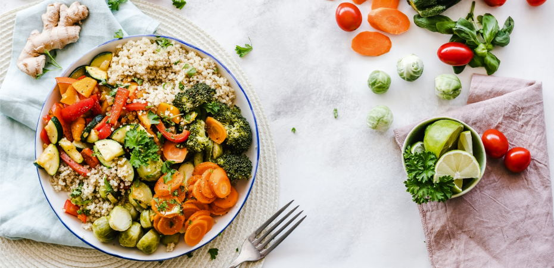

FitX
Indian Diet Plan for Weight Gain

"Some people when they see cheese, chocolate or cake they don't think of calories."
7-Day Indian Diet Plan For Weight Loss
In all honesty, not all aspects of any cuisine are healthy, and it's a fact we all know. Hence, it would be best to stick to the healthier options it offers. For a successful weight-loss program, you should be conscious of what you consume daily-eating mindfully and paying keen attention to what, how, and where you eat can make a difference.
Calorie calculation is relatively straightforward with the availability of multiple apps today. A 1,400-calorie diet can also be one kachori, two samosas, two gulab jamun, and two cups of tea. While that doesn't sound so bad, there are no shortcuts for losing weight the healthy way. Following a balanced diet is vital is a must.
Let us check out what a healthy 7-day Indian diet plan for weight loss includes.
Healthy Indian Diet Chart For Females (1,200Kcal):
Day 1:
*Early Morning
-A glass of milk
*Breakfast
-Butter omelet with cheese (2 eggs), 3 slices of sunflower seed bread, a glass of orange juice
*Mid-Morning
-3 teaspoons of favorite jam and bread and as much parsley as desired
*Lunch
-3 teaspoons of favorite jam and as much parsley as desired
*Tea Time
-A bowl of yogurt and salted almonds
*Mid-Evening
-A glass of whole milk, 1 handful of pumpkin seeds, plum puree
*Dinner
- A bowl of lentil soup, medium size tomato and cheese pizza, tomato salad
Day 2:
*Early Morning
-2 bagels, 8 black and green olives.
*Breakfast
-A glass of whole milk.A slice of goat cheese and a small bowl of jam
*Mid-Morning
-1 apple, 1 handful of hazelnuts
*Lunch
-A serving of meatball stew. A plate of tomato juice, a serving of spaghetti. Salad with extra lemon
*Tea Time
-5 spoons of tahini halva and a slice of bread
*Mid-Evening
-A glass of whole milk and a handful of almonds
*Dinner
-A serving of spinach with ground beef, 2 slices of bread, a bowl of yogurt soup
Day 3:
*Early Morning
-A handful of hazelnuts
*Breakfast
-Cheese omelet made with an egg. A bagel. Olives with plenty of lemons
*Mid-Morning
-A tomato. 2 teaspoons of honey and butter
*Lunch
- A serving of steamed fish. A bowl of salad. 2 slices of bread
*Tea Time
-4 spoons of tahini and molasses mix. 2 slices of whole wheat bread
*Mid-Evening
-A glass of milk and 2 slices of walnut cake
*Dinner
-A bowl of lentils with ground beef, a cheese pizza, a glass of lemonade and lemon salad with parsley and onions
Day 4:
*Early Morning
-A handful of Turkish delight
*Breakfast
-4 spoons of cottage cheese, a tomato, 3 walnuts, 2 slices of bread
*Mid-Morning
-Apple with strawberry jam and orange juice in a large glass.
*Lunch
-A cheese pizza. A bowl of tzatziki and carrots with olive oil
*Tea Time
-5 spoons of tahini halva and a slice of bread
*Mid-Evening
-A glass of whole milk and a handful of nuts
*Dinner
-A portion of rice with minced meat and eggplant, a bowl of tzatziki, a portion of tomato and pickles
Day 5:
*Early Morning
-2 slices of walnut cake
*Breakfast
-A bowl of tomato soup and a cheese toast
*Mid-Morning
-5 oatmeal biscuits
*Lunch
-A portion of the egg with vegetables, a portion of cheese pasta, a plate of green beans with olive oil
*Tea Time
-1/2 cup masala tea/coffee with A handful of hazelnuts
*Mid-Evening
-Fruit salad will add a little honey and a handful of almonds
*Dinner
-6 lentil patties, a portion of cheese pie, a bowl of tzatziki and a tomato
Day 6:
*Early Morning
-1/2 cup masala tea/coffee with a handful of hazelnuts
*Breakfast
-Cheese omelet made with a egg. A bagel. Olives with plenty of lemon
*Mid-Morning
-1 orange + walnut (8 halves)
*Lunch
-Chicken with tomato, a serving of butter rice and a bowl of carrots with olive oil
*Tea Time
-A bowl of yogurt and salted almonds
*Mid-Evening
-A glass of whole milk and a handful of nuts
*Dinner
-A bowl of lentils with ground beef, a cheese pizza, a glass of lemonade
Day 7:
*Early Morning
-Toned Milk + Almonds (Soaked) + Walnuts
*Breakfast
-Broken Wheat Porridge (Dalia) OR Whole wheat slices with Peanut butter
*Mid-Morning
-Mass Gainer with Milk
*Lunch
-Normal Roti+ Rice / Masala Dosa,Paneer curry/ Sambhar,Potato with curd,Green Salad
*Tea Time
-Mass Gainer
*Mid-Evening
-Banana Shake + Almonds
*Dinner
-Normal Roti,Pulse (Dal) / Egg white curry,Seasonal Vegetables